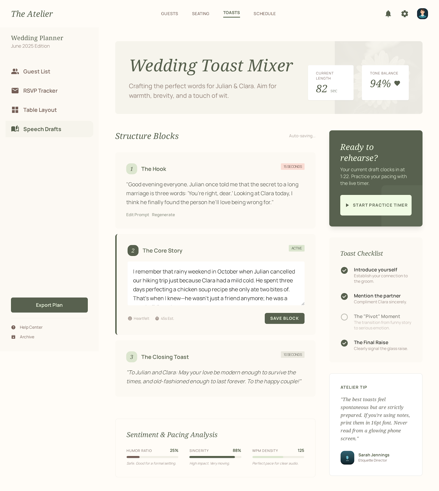

PF SAFE DEMO · 2026-03-16-p002
Wedding Toast Prompt Mixer
Help a speaker assemble a 60 to 90 second wedding toast from modular prompt blocks without freezing up.
ingest status
Imported from Stitch exportThe approved Stitch screen is now hosted through a local PF-safe wrapper for reliable preview and build output.
- Source preserved as local artifact
- Public demo path avoids remote CDN dependency
- Preview uses the shipped Stitch screen
